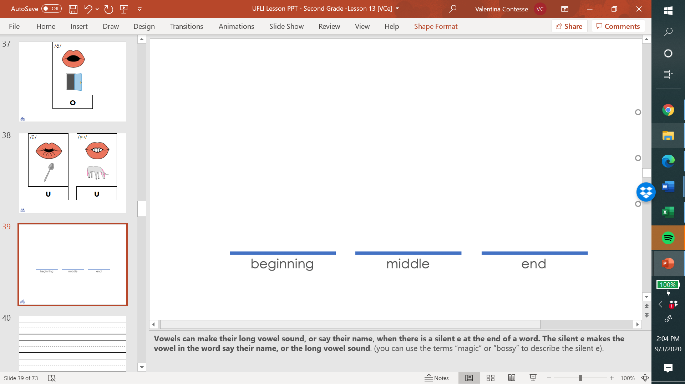
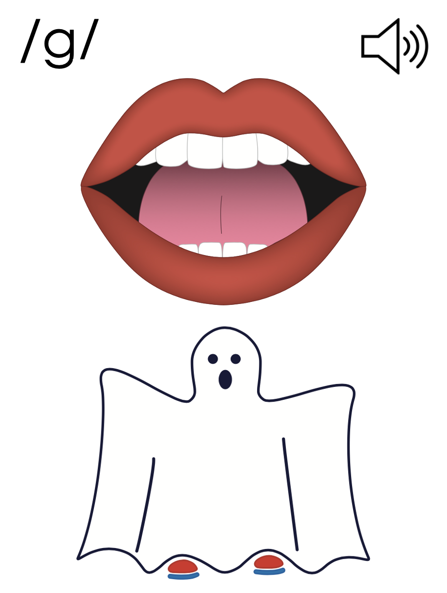
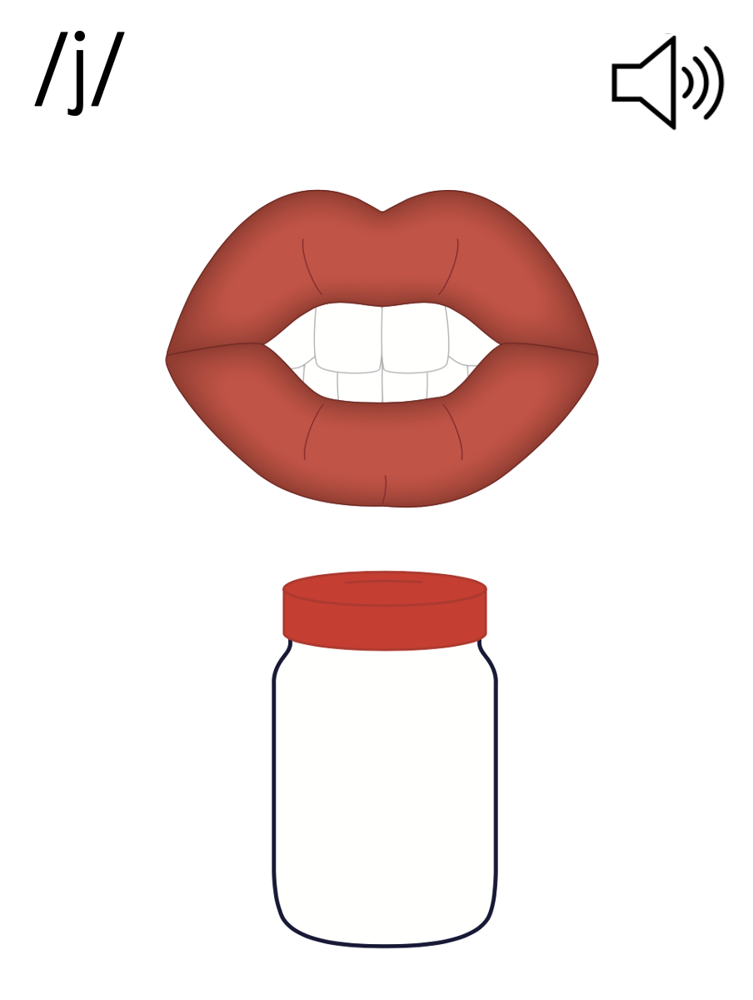
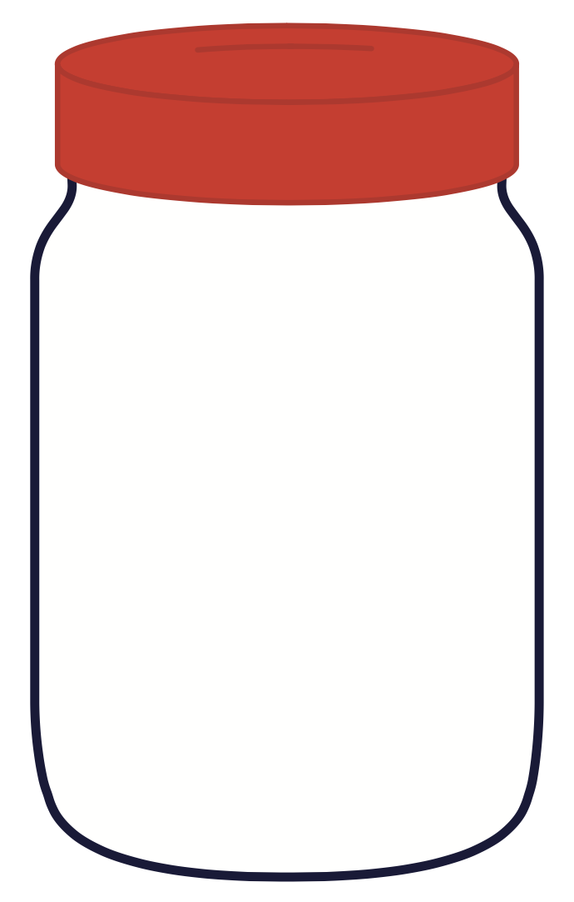

Lesson 61
_ge /j/

ufliteracy.org


Lesson 61
_ge /j/


See UFLI Foundations lesson plan Step 1 for phonemic awareness activity.


See UFLI Foundations lesson plan Step 2 for student phoneme responses.


c
a
i
o
e
u
nk
ng
wh
ph
th
ch
sh
ck
ff
ll
ss
zz
s


See UFLI Foundations lesson plan Step 3 for auditory drill activity.

No slides needed for auditory drill.


See UFLI Foundations lesson plan Step 4 for blending drill word chain and grid.
Visit ufliteracy.org to access the Blending Board app.


See UFLI Foundations lesson plan Step 5 for recommended teacher language and activities to introduce the new concept.

e
g

g

e
c
a
g

j
_ge

Handwriting paper for letter formation practice. Use as needed.
See UFLI Foundations manual for more information about letter formation.

page

age
huge
wage
cage
rage
stage
range
change
strange

See UFLI Foundations lesson plan Step 5 for words to spell.
Handwriting paper to model spelling.

See UFLI Foundations lesson plan Step 5 for words to spell.
Handwriting paper for guided spelling practice.


Insert brief reinforcement activity and/or transition to next part of reading block.

Lesson 61
_ge /j/

New Concept Review

See UFLI Foundations lesson plan Step 5 for recommended teacher language and activities to review the new concept.
e
g
g
e
c
a
g
j
_ge
page
stage
huge
change


See UFLI Foundations lesson plan Step 6 for word work activity.
Visit ufliteracy.org to access the Word Work Mat apps.


See UFLI Foundations lesson plan Step 7 for irregular word activities.
The white rectangle under each word may be used in editing mode. Cover the heart and square icons then reveal them one at a time during instruction.

See UFLI Foundations manual for more information about reviewing irregular words.

could
Lesson 50+
OUL represents the /oo/ sound.
The white rectangle under the word may be used in editing mode. Cover the heart and square icons then reveal them one at a time during instruction.
would
Lesson 50+
OUL represents the /oo/ sound.
The white rectangle under the word may be used in editing mode. Cover the heart and square icons then reveal them one at a time during instruction.
should
Lesson 50+
OUL represents the /oo/ sound.
The white rectangle under the word may be used in editing mode. Cover the heart and square icons then reveal them one at a time during instruction.
one
Lesson 58+
O represents the sounds /w/+/ŭ/.
The final E is silent but does not follow the long vowel VCe pattern.
The white rectangle under the word may be used in editing mode. Cover the heart and square icons then reveal them one at a time during instruction.
once
Lessons 60+
O represents the sounds /w/+/ŭ/.
The white rectangle under the word may be used in editing mode. Cover the heart and square icons then reveal them one at a time during instruction.
Handwriting paper for irregular word spelling practice. Use as needed.
See UFLI Foundations manual for more information about reviewing irregular words.


See UFLI Foundations lesson plan Step 8 for connected text activities.
Did Bruce like the rice?
The mice in that cage are huge.
The stage is a place where Grace shines!
See UFLI Foundations lesson plan Step 8 for sentences to write.

The UFLI Foundations decodable text is provided here. See UFLI Foundations decodable text guide for additional text options.
Pete’s Pet Snake
Pete got a pet snake. Pete gave the snake a name. “You are Steve,” Pete said to the snake. Steve has a huge cage. Pete has to lock the cage, so Steve is safe.
Steve likes his cage. He can hide next to the rocks. He can rest in the sunshine or the shade. At his age, Steve’s skin sheds and his scales change. This looks a bit strange, but Pete likes Steve all the same.

Insert brief reinforcement activity and/or transition to next part of reading block.